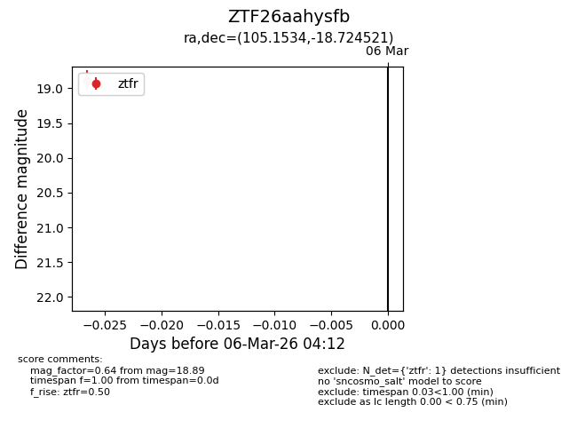
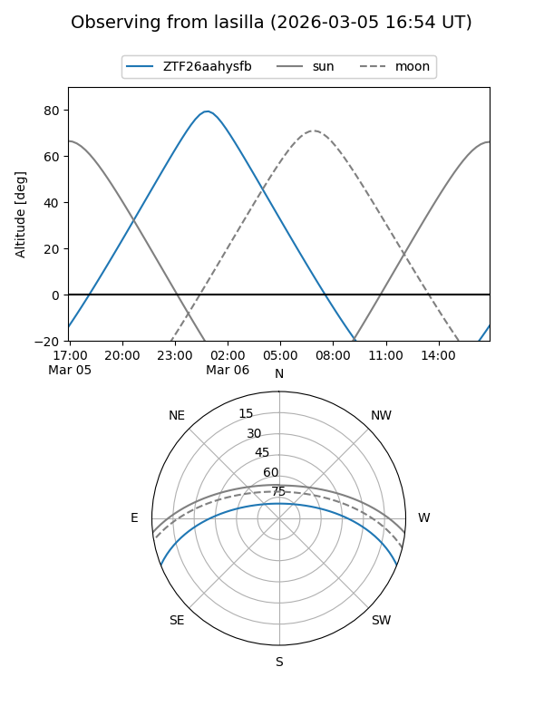
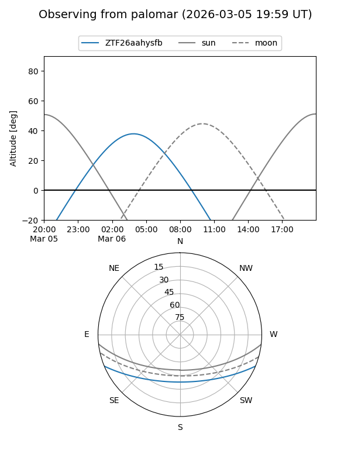

ZTF26aahysfb
Target ZTF26aahysfb at 2026-03-06 04:13
Aliases and brokers:
FINK: link
Lasair: link
ALeRCE: link
alt names
ZTF26aahysfb (ztf,fink_ztf)
Coordinates:
equatorial (ra, dec) = 105.1534,-18.72452
equatorial (HMS+DMS) = 07:00:36.81,-18:43:28.27
galactic (l, b) = (230.6858,-6.46766)
Flags:
Photometry:
last ztfr=18.89
1 ztfr detections
Lightcurve

Visibility


Additional plots